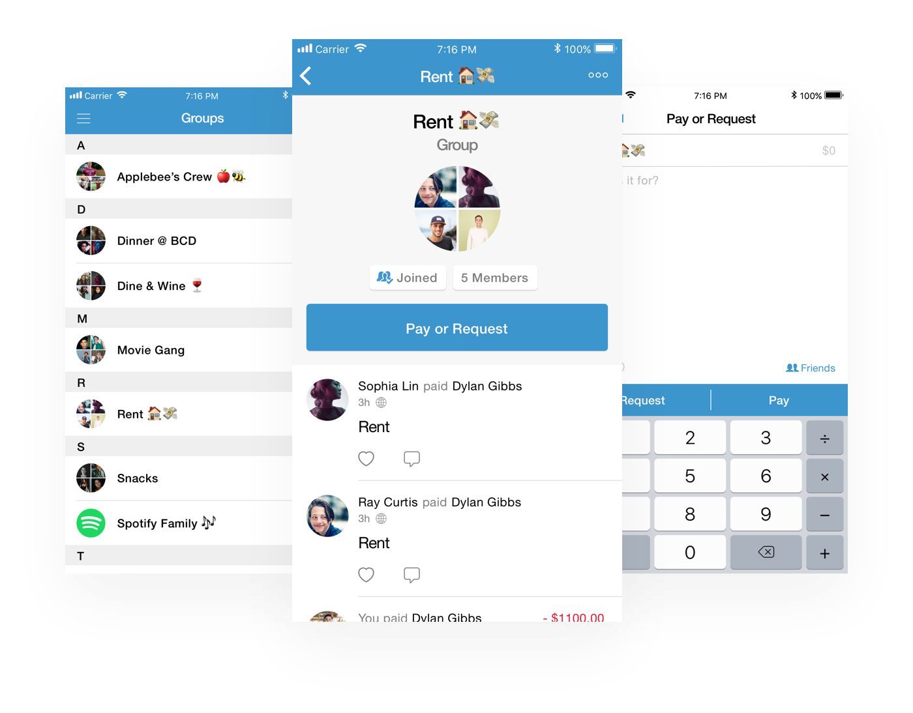

Venmo Groups
A faster and easier way to transfer money with your group.
Overview
Context
Venmo is the modern way to transfer money. During October of 2017, I was moving around a lot trying to stay in NYC so I could keep working at my design internship. This resulted in me needing to Venmo a lot of people to pay for rent. After constant usage, I realized there was some friction when needing to transfer funds to many people, especially when it's recurring. Realizing this was the perfect time for me to practice my craft, I decided to find a solution.
Outcome
There's no outcome yet as this is an ongoing side project.
However, during this time I did conduct user interviews with several people, which not only showed traction for the need of this feature, but also helped me develop better interviewing skills.
Problems
I narrowed it down to these problems that I wanted to solve:
- Requesting money from many people, especially those who are not in your friends list, can be tedious.
- It becomes repetitive to request or pay the same group of people over and over again.
- There is no obvious incentive to become friends with someone on Venmo.
Assumptions and Constraints
Since this was a side project, I created constraints and assumptions to put myself in a potential real case scenario:
- From the user interviews, concluding there is a mass need for a solution when dealing with group transactions.
- Limited to using Venmo's style guide.
- Technical constraints are not an issue for the sake of creative brainstorming.
Solutions
My proposed solution was Venmo Groups, a new feature where you can search for people based on location so that finding groups of people becomes easier. The groups concept also allows you to pay and request from several people at once.
Search By Location
You can create a group by selecting to search nearby users. Once these users are found, a list will be compiled - the people from this list are assumed to also have their feature turned on. From this list, select the people you want to add to your group. This makes it easier to find people without having to fumble over usernames and faster than doing it one by one.
Prototype for creating a new group.
Various screens for Venmo Groups.
Multiple Transactions At Once
Instead of having to do multiple, individual transactions over and over for recurring payments, such as paying for rent or Spotify Family, Venmo Groups allows you to conduct a single transaction with everyone in that group.
User flows for transactions with the group or single members.
Prototype of the user flow for a group transaction.
If the amount varies per member, then single transactions can still be done within the group.
Prototype of the user flow for single transactions within a group.
Takeaways
The project took me about four days to complete, several hours each day. Here are the key lessons that I learned from it:
Design Constraints Are Freeing
This was the first personal project where I wasn't designing from scratch. When doing so, a lot of time is usually spent building up the visual system, time that could be spent strategizing and brainstorming better solutions.
Having Venmo's style guide at hand allowed me to not stress about the UI and focus more on the user problems.
Waste Not, Want Not
Wanting to familiarize myself with more design software, I thought this project would be a good opportunity to teach myself Origami.
Getting carried away with all the animation capabilities, I realized how much time I was wasting creating prototypes that didn't show how a proposed feature would solve a certain problem. Prototypes aren't supposed to be created for the sake of showing your animating skills, but rather to make sure anyone using it can understand what it's trying to accomplish.